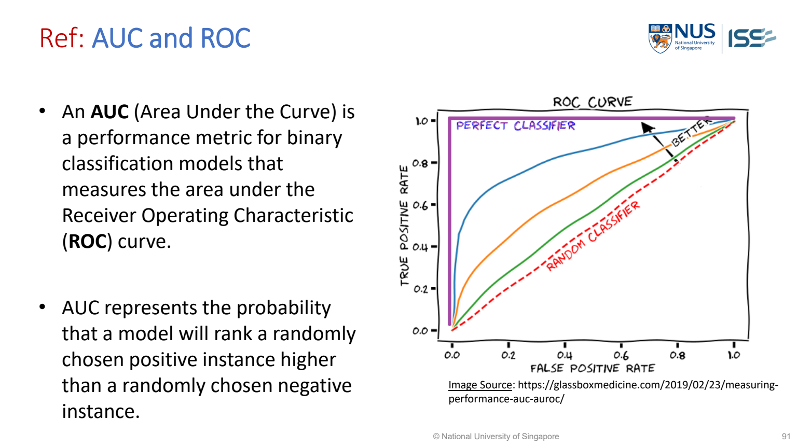

ROC (Receiver Operating Characteristic), AUC (Area Under the Curve) and gain/lift charts
ROC compares true-positive rate against false-positive rate as the threshold（門檻值） changes. Gain and lift ask whether targeting the highest-scored cases finds more positives than random targeting.
AUC (Area Under the Curve；曲線下面積)
AUC is the area under the ROC curve. It measures how well scores separate positive from negative cases across thresholds.

MR-Day 2_JR_v1.pdf · PDF p.90 / printed slide 91.
First read ROC correctly
- Vertical axis: TPR (True Positive Rate；真正率), equal to recall. Of actual positive cases, how many are flagged positive?
- Horizontal axis: FPR (False Positive Rate；假正率). Of actual negative cases, how many are incorrectly flagged positive?
- Each threshold gives one point. Changing the decision threshold changes these two rates, producing the ROC curve.
- Upper-left is desirable: many true positives and few false positives. The diagonal is the random-ranking reference.
The lecture’s probability interpretation
- Choose one positive case and one negative case at random.
- How often does the model give the positive case a higher score?
- That is the ranking interpretation of ROC AUC.
- Equal scores conventionally count as half a correct ordering.
| AUC | Interpretation |
|---|---|
| 1.0 | Perfect positive-versus-negative ordering on the evaluated data. |
| 0.8 | About 80% of random positive/negative pairs are correctly ordered (counting score ties as half). |
| 0.5 | Random-level pairwise ranking overall; this alone does not describe every part of the curve. |
| Below 0.5 | The score ordering is worse than random overall; check positive-class choice, score direction and model performance. |
AUC 0.8 does NOT mean 80% accuracy, that each positive gets probability 0.8, or that the chosen threshold is profitable. AUC evaluates ordering; accuracy evaluates decisions at a specific threshold.
Short worked example: ranking four pairs
Teaching example: positive scores are 0.9 and 0.4; negative scores are 0.6 and 0.2. Higher score means more likely positive.
| Positive score | Negative score | Positive ranked higher? |
|---|---|---|
| 0.9 | 0.6 | Yes |
| 0.9 | 0.2 | Yes |
| 0.4 | 0.6 | No |
| 0.4 | 0.2 | Yes |
- C
- Positive/negative pairs where the positive score is strictly higher.
- T
- Pairs with equal scores.
- N₊, N₋
- Numbers of positive and negative cases; their product is the total pair count.
Three of four positive/negative pairs are correctly ordered. AUC=0.75, with no ties. These scores are an original teaching example, not values from the lecture graph.
Calculate gain and lift at a coupon budget
Worked study example: Illustrative held-out（留出資料；未參與該階段訓練） population（族群） has 1000 customers,100 purchasers. The model ranks customers; the top200 contain50 purchasers.
| Quantity | Calculation | Meaning |
|---|---|---|
| Budget coverage（涵蓋率；能服務的使用者或項目範圍） | 200/1000 = 20% | Coupons go to top fifth |
| Gain | 50/100 = 50% | Finds half of all purchasers |
| Precision（精確率） in target group | 50/200 = 25% | One in four targeted customers purchases |
| Random baseline（基準；供比較的簡單方法） precision | 100/1000 = 10% | Baseline purchaser rate |
| Lift | 25%/10% = 2.5 | 2.5 times random concentration |
| Same lift from gain | 50%/20% = 2.5 | Equivalent calculation |
What this tells us: A 2.5 lift indicates useful concentration, but issuing 200 coupons is only worthwhile if the expected benefit exceeds campaign cost.
Plot coordinates and campaign values are illustrative,matching the lecture’s chart meanings.
Original teaching illustration; illustrative values unless stated; source context below · S-PSUPR Day1b.pdf · PDF p.18, 19
ROC/AUC versus gain/lift: choose the right question
- ROC/AUC describe discrimination across thresholds. They do not establish the probability（機率） calibration（校準；令量測或機率對應實際意義） or the profit at a particular threshold.
- Gain asks what fraction of all positives is captured by targeting the highest-scored fraction of the population. Lift compares that capture with random targeting, so it directly relates to a limited outreach budget.
- A ranking can have good AUC yet produce too many false positives at the selected operating point, especially with rare positives.
- Inspect the actual selected group and base rate rather than treating one summary score as a deployment decision.
Formulas: ROC rates and lift
- TPR
- True-positive rate, equal to recall.
- FPR
- Fraction of actual NEGATIVES incorrectly flagged.
- TP, FN, FP, TN
- Confusion-matrix counts with the same chosen positive class.
- Lift
- Positive rate in the selected group divided by the population positive rate.
Interpret the result: Use gain/lift at the actual budget;AUC is not profit or accuracy.
Diagnose: High AUC leads to an unprofitable campaign
| What you observe | Why it happens | What to change | Why that helps |
|---|---|---|---|
| High AUC leads to an unprofitable campaign | Threshold/budget ignored costs and prevalence | Evaluate targeted precision and expected value at the actual operating point | Good ranking across all thresholds does not establish profitability at the chosen one. |
Common wrong answers and the exact correction
- AUC is not accuracy
- A high AUC does not determine the best coupon threshold.